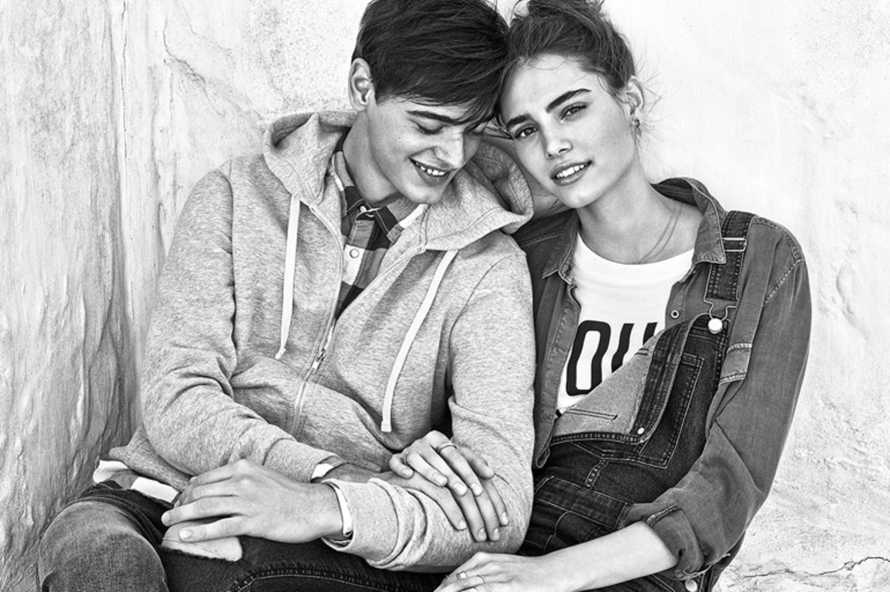
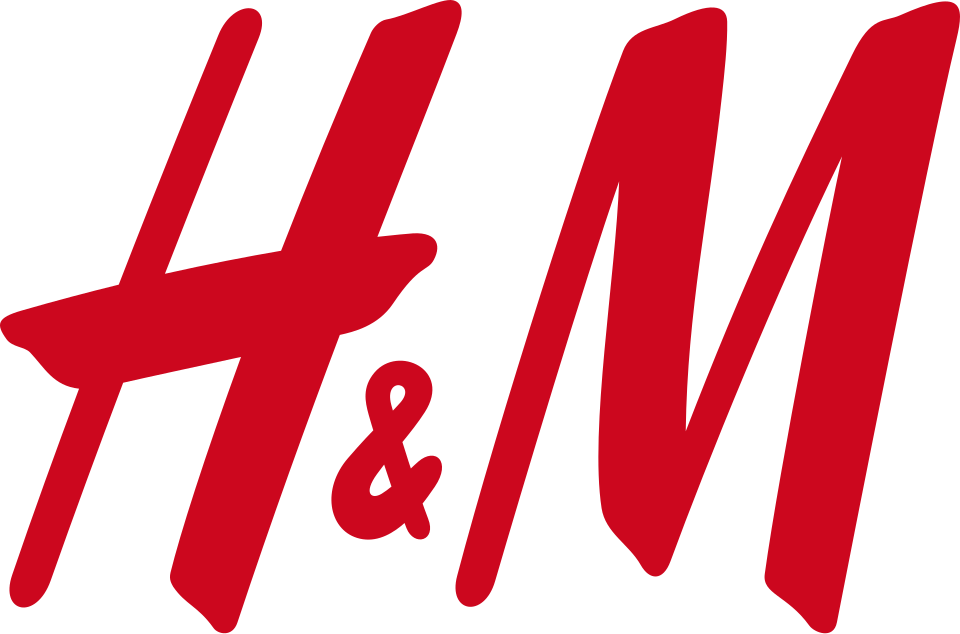

홈 > 브랜드 매거진 > H&M
H&M
H&M(Hennes & Mauritz)은 스웨덴에 본사를 둔 다국적 패스트패션 의류 기업이다.
산업 분야 패션·럭셔리 · 공개 등급 편집 검수 · 브랜드 평가 4.7 ★


한눈에 보는 브랜드
H&M은 스웨덴 사업가 에를링 페르손(Erling Persson)이 1947년 스웨덴 베스테로스에 연 여성복 매장 '헤네스(Hennes)'에서 출발한 패스트패션 기업이다. 페르손은 제2차 세계대전 직후 미국 출장에서 본 대량 판매 방식에 착안해 사업을 구상했다.
1968년 사냥·낚시 용품점 마우리츠 비드포르스를 인수하며 남성복으로 품목을 넓혔고 사명을 헤네스 앤드 마우리츠(H&M)로 바꿨다. 현재 본사는 스톡홀름에 있으며 70여 개 시장에서 4천여 개 매장을 운영하는 글로벌 의류 기업으로 성장했다.
브랜드 관점
H&M의 위치는 경쟁사와의 대비에서 분명해진다. 자라(인디텍스)는 2~3주 내 트렌드 반영으로 속도를 앞세우고, 유니클로는 기능성 베이식과 품질·내구성으로 패스트패션과 지속가능 의류 사이를 잇는다.
반면 쉬인은 연 30만 종이 넘는 신상품과 5일 안팎의 초단기 공급망으로 가격과 물량을 무기 삼아 H&M의 연 4천여 종 출시 모델을 위협한다. H&M은 디자이너 협업으로 고급 감성을 대중가에 옮겨오는 차별점을 키워 왔고, 동시에 패스트패션 산업 전반에 가해지는 환경 압박에 대응해 재생·지속가능 소재 비중과 재생에너지 사용을 높이며 평판을 방어하고 있다.
한국에서는 2010년 진출 초기 큰 관심을 모았으나 유니클로와 토종 SPA(에잇세컨즈·탑텐 등) 경쟁으로 성장세가 둔화돼, 가격·트렌드·지속가능성을 동시에 증명해야 하는 과제를 안고 있다.
시작과 성장
창업주 에를링 페르손은 1947년 스웨덴 베스테로스에 여성복 단일 매장 '헤네스'를 열었다. '헤네스'는 스웨덴어로 '그녀의 것'을 뜻하며 초기에는 여성복만 취급했다.
미국식 고회전 박리다매 모델을 들여와 합리적 가격대의 유행 의류를 빠르게 공급하는 방식을 자리매김시켰다. 전환점은 1968년이었다.
페르손이 스톡홀름의 사냥·낚시 용품 소매점 마우리츠 비드포르스(Mauritz Widforss)를 인수하면서 남성복과 아동복으로 품목이 확장됐고, 두 상호를 합쳐 헤네스 앤드 마우리츠(Hennes & Mauritz), 즉 H&M으로 재출범했다. 이후 스칸디나비아를 넘어 1976년 런던에 진출하며 국제화의 첫발을 내디뎠고, 유럽 전역과 북미·아시아로 시장을 넓혀 갔다.
1980년대 이후 창업주의 아들 스테판 페르손 체제에서 글로벌 확장이 가속됐다.
브랜드 아이덴티티
H&M의 정체성은 '패션과 품질을 합리적 가격에'라는 명제로 압축된다. 스웨덴 디자인 회사 BVD가 만든 빨간색 워드마크는 활력과 유행을 좇는 태도, 합리적 가격에 트렌드를 발견하는 즐거움을 상징한다.
굵은 가로획이 특징인 맞춤 이탤릭 서체로 H와 M을 앰퍼샌드로 묶어 단순하고 즉각적인 인지성을 노린다. 타깃은 유행에 민감하면서도 가격을 의식하는 폭넓은 대중 소비자이며, 브랜드 보이스는 활기차고 접근하기 쉬우면서 패션 지향적이다.
최근에는 지속가능성과 브랜드 격상을 정체성의 핵심 축으로 끌어올리고 있다.
제품과 서비스
주력은 여성·남성·아동 의류와 액세서리이며, 생활용품 라인 H&M Home으로 영역을 넓혔다. 2004년 카를 라거펠트 협업을 시작으로 스텔라 매카트니, 콤데가르송, 베르사체, 발맹 등 명품 디자이너와의 한정 협업을 정례화해 고급 디자인을 대중가로 옮기는 모델을 정착시켰다.
가격대는 기본 아이템을 누구나 부담 없이 구매할 수 있는 중저가에 맞추고, 협업·프리미엄 라인으로 폭을 넓힌다. 유통은 전 세계 직영 매장과 온라인몰을 양대 축으로 운영한다.
현재 상태
본사는 스웨덴 스톡홀름에 있으며, 창업주 일가인 페르손 가문이 최대 주주로 2025년 기준 자본의 64% 이상을 지배한다. 2025년 다니엘 에르베르 최고경영자 체제에서 규모 확장보다 생산성과 브랜드 격상을 우선하는 전략으로 전환해, 성숙 시장의 부진 매장을 정리하고 핵심 입지를 강화하고 있다.
2025 회계연도 말 매장 수는 약 4천100여 개로 한 해 순감했고, 순이익은 약 11억 5천만 유로로 늘었다. 2024 회계연도 순매출은 약 2천344억 스웨덴 크로나(미화 약 222억 달러)였으며, 독일이 최대 시장이다.
진출 시장은 70여 개국, 임직원은 17만여 명 규모다.